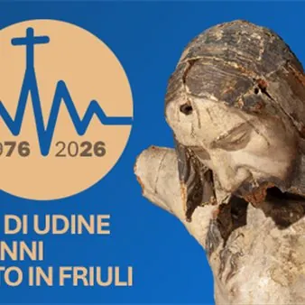

da dom 15 feb a dom 25 ott
50° anniversario del terremoto in Friuli - convegni dell'Arcidiocesi di Udine
Nel 2026 ricorre il 50° anniversario del disastroso terremoto che, tra il 6 maggio e il 15 settembre 1976, distrusse innumerevoli paesi del Friuli collinare e pedemontano, portando con sé la vita di 990 persone. Per commemorare i tragici eventi, ricordare le vittime ed esprimere…
 Indicazioni
Indicazioni
- Costi e prenotazioni
- Costo non indicato · Prenotazione non indicata
- Programma
- Programma da verificare. Apri la fonte ufficiale per orari e possibili aggiornamenti.
- In caso di maltempo
- Nessuna indicazione specifica pubblicata.
- Note
- Acquisito automaticamente dalla fonte.
L’EVENTO
Descrizione completa
Nel 2026 ricorre il 50° anniversario del disastroso terremoto che, tra il 6 maggio e il 15 settembre 1976, distrusse innumerevoli paesi del Friuli collinare e pedemontano, portando con sé la vita di 990 persone. Per commemorare i tragici eventi, ricordare le vittime ed esprimere il suo ringraziamento per la solidarietà ricevuta, l'Arcidiocesi di Udine propone un programma di cinque convegni per ricordare ciò che è stato e trarne insegnamenti per il domani
Domenica 15 febbraio 2026 - ore 15.30
Udine, polo universitario di via Tomadini 30, Aula 3
Dare senso. Uno sguardo biblico e pastorale su ieri e oggi
Dov’era Dio il 6 maggio 1976? E dove lo troviamo nei drammi di oggi? In occasione del convegno dei catechisti, un’opportunità per guardare con l’occhio della fede a quando accadde e accade.
Domenica 15 marzo 2026 - ore 15.30
Artegna, teatro "Mons. Lavaroni", piazza Marnico 20
Tessere legami. Parrocchie e comunità, una rinascita continua
Da subito le comunità terremotate organizzarono comitati locali per farsi sentire con una voce unica e forte. Questa voce c’è anche oggi? Quali legami costruiscono le comunità?
Sabato 2 maggio 2026 - ore 9.00ù
Gemona del Friuli, cinema-teatro sociale, via XX settembre 5
Servire. Dall’emergenza al coordinamento: 50 anni della Caritas diocesana
La necessità di coordinare gli aiuti alle comunità colpite dal sisma spinse la Chiesa diocesana a dare vita alla Caritas: da allora, cinquant’anni di impegno ininterrotto a favore delle persone più bisognose.
Domenica 13 settembre 2026 - ore 15.30
Venzone, salone del palazzo municipale, piazza Municipio 1
Ri/Edificare. L'architettura ecclesiale: ristrutturazione, restauro, ricostruzione
Oggi come allora, la comunità ha bisogno di luoghi in cui riunirsi, dove le relazioni si intrecciano e si rinsaldano. Un tema sempre centrale nella Chiesa e nelle comunità.
Domenica 25 ottobre 2026 - ore 15.30
Buja, teatro "Casa della gioventù", Strade dal plevan 13
Dare vita. Le figure ecclesiali della rinascita: i preti e il Vescovo
Nella tragedia del terremoto, i preti e l’allora arcivescovo furono accanto alla popolazione. In ogni paese, il parroco era il punto di riferimento. Il ricordo di allora e gli interrogativi di oggi.
L’ingresso è gratuito e libero fino all’esaurimento dei posti.
IL PROGRAMMA
Programma e orari
Appuntamenti raccolti dalle fonti elencate. Dove manca un orario, non è ancora disponibile in questa scheda.
Programma pubblicato
- Dal 2026-02-15 al 2026-10-25
INFORMAZIONI UTILI
Prima di partire
- Controllare la fonte prima di partire.
ORGANIZZAZIONE